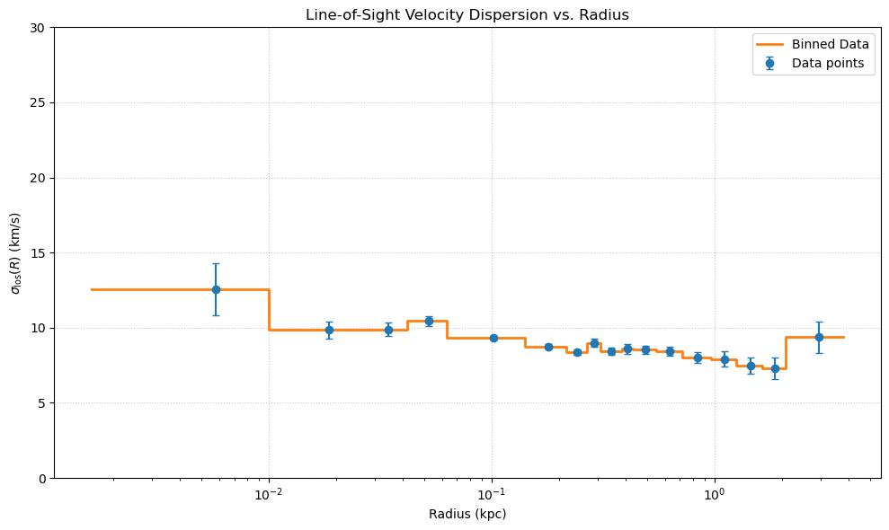
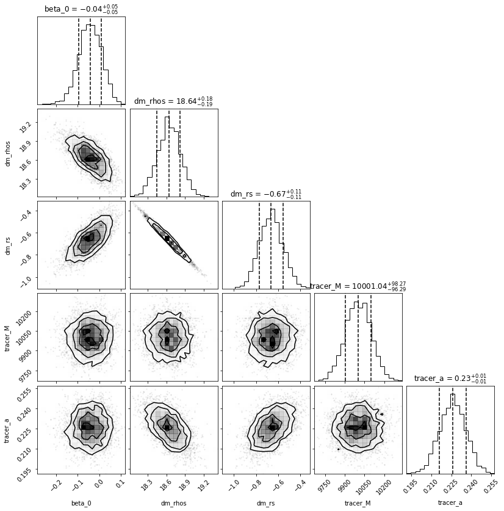

Tutorial#
Show code cell content
%load_ext autoreload
%autoreload 2
Show code cell content
import os
os.environ["XLA_FLAGS"] = "--xla_force_host_platform_device_count=2"
import numpyro
numpyro.enable_x64()
import jax
from jax._src.config import config
config.update("jax_enable_x64", True)
import jax.numpy as jnp
import pandas as pd
import matplotlib.pyplot as plt
I’ll be assuming that not all data sets will have consistent naming. He’re i’ll show an example of how to write a simple subclass that will then allow you to use the builtin methods in DynamicAll
import dynamicAll
from dynamicAll import data, models
data_path = "/Users/juan/Desktop/dracoish.txt"
input_data = pd.read_csv(data_path, header=0).dropna() # drop all nan values
input_data
| RA | DEC | MAG_G | MAG_I | ANGSEP | RPROJ | SNR | VTRUE | VSTAT | VSYS | VMEAS | VMEASERR | VSYSERR | VERR | |
|---|---|---|---|---|---|---|---|---|---|---|---|---|---|---|
| 0 | 53.88518 | -54.02280 | 23.32272 | 23.12567 | 0.07122 | 0.09447 | 5.41586 | 44.11046 | -0.68338 | 0.70942 | 44.13650 | 4.16485 | 2.0 | 4.62017 |
| 1 | 54.06523 | -53.93597 | 17.65393 | 16.74092 | 0.07465 | 0.09902 | 363.11669 | 72.04525 | 0.03049 | 3.05323 | 75.12897 | 0.02679 | 2.0 | 2.00018 |
| 2 | 54.06599 | -53.77255 | 19.90599 | 19.92407 | 0.23075 | 0.30608 | 68.42616 | 56.36690 | -0.17761 | -0.02299 | 56.16629 | 0.19849 | 2.0 | 2.00983 |
| 3 | 54.02349 | -53.97031 | 23.25164 | 23.05304 | 0.03274 | 0.04343 | 5.71572 | 65.04756 | 2.09910 | -5.76456 | 61.38210 | 3.90405 | 2.0 | 4.38652 |
| 4 | 54.02006 | -53.96624 | 21.72529 | 21.27512 | 0.03576 | 0.04743 | 25.99445 | 59.43007 | 0.01197 | -0.68023 | 58.76180 | 0.63408 | 2.0 | 2.09811 |
| ... | ... | ... | ... | ... | ... | ... | ... | ... | ... | ... | ... | ... | ... | ... |
| 11047 | 53.87506 | -53.98700 | 21.87238 | 21.42785 | 0.07459 | 0.09894 | 23.23569 | 48.53974 | -0.14664 | 1.43758 | 49.83068 | 0.72546 | 2.0 | 2.12751 |
| 11048 | 54.02857 | -54.20824 | 22.87137 | 22.61137 | 0.20891 | 0.27711 | 8.54196 | 69.48248 | -2.54854 | -3.29287 | 63.64107 | 2.41063 | 2.0 | 3.13228 |
| 11049 | 53.85962 | -53.76057 | 22.81739 | 22.53252 | 0.25333 | 0.33603 | 9.07093 | 67.13552 | -1.77017 | -0.58418 | 64.78117 | 2.24294 | 2.0 | 3.00513 |
| 11050 | 54.15867 | -53.91983 | 19.48593 | 18.89245 | 0.12306 | 0.16323 | 124.43928 | 64.93852 | -0.18654 | 1.14014 | 65.89211 | 0.09684 | 2.0 | 2.00234 |
| 11051 | 54.10683 | -53.99053 | 23.34813 | 23.15163 | 0.06351 | 0.08424 | 5.30868 | 64.66226 | -5.47644 | -1.52087 | 57.66495 | 4.26595 | 2.0 | 4.71151 |
11052 rows × 14 columns
R = input_data["RPROJ"].values
vlos = input_data["VMEAS"].values
error = input_data["VERR"].values
error
array([4.62017, 2.00018, 2.00983, ..., 3.00513, 2.00234, 4.71151])
fig, ax = plt.subplots()
ax.hist(vlos, bins="auto", density=True)
ax.set(xlabel="vlos")
[Text(0.5, 0, 'vlos')]
class Dsphsim(dynamicAll.base.Data):
def __init__(self, table):
self.table = table
self._R = table["RPROJ"].values
self._vlos = table["VMEAS"].values
self.d_vlos = table["VERR"].values
super().__init__()
dataSet = Dsphsim(input_data)
/Users/juan/phd/projects/dynamicAll/src/dynamicAll/base.py:1572: UserWarning: The '_r' component is not defined.\nOnly projected moments may be available.
warnings.warn(
/Users/juan/phd/projects/dynamicAll/src/dynamicAll/base.py:1577: UserWarning: 'pmr' and 'pmt' components are not defined.\nVelocity dispersion for these components will not be available.\n only 'los' moment will be available
warnings.warn(
Don’t worry about the warnings. it’ll give out some sort of warning unless you put in 6D data.
print(dataSet._component_map.keys())
dict_keys(['los'])
dataSet._component_map
{'los': (array([0.09447, 0.09902, 0.30608, ..., 0.33603, 0.16323, 0.08424]),
array([44.1365 , 75.12897, 56.16629, ..., 64.78117, 65.89211, 57.66495]),
array([4.62017, 2.00018, 2.00983, ..., 3.00513, 2.00234, 4.71151]))}
# R_center,los_disp,dlos_disp,bin_edges = dataSet.dispersion_i('los',binfunc=np.histogram,bins='auto',clear_cache=True)
R_center, los_disp, dlos_disp, bin_edges = dataSet.dispersion_i(
"los", clear_cache=True
) # binfunc=np.histogram,bins='auto',clear_cache=True)
sample: 100%|██████████| 1500/1500 [00:01<00:00, 983.73it/s, 1 steps of size 4.76e-01. acc. prob=0.93]
mean std median 5.0% 95.0% n_eff r_hat
global_sigmav 8.91 0.07 8.91 8.79 9.01 331.43 1.00
mean_velocity 59.91 0.09 59.90 59.75 60.05 952.53 1.00
Number of divergences: 0
sample: 100%|██████████| 1500/1500 [00:02<00:00, 626.04it/s, 7 steps of size 6.69e-01. acc. prob=0.86]
mean std median 5.0% 95.0% n_eff r_hat
dispersion[0] 12.54 1.73 12.39 9.91 15.28 1957.13 1.00
dispersion[1] 9.85 0.58 9.81 8.89 10.74 2601.76 1.00
dispersion[2] 9.90 0.47 9.88 9.22 10.71 2603.38 1.00
dispersion[3] 10.45 0.33 10.43 9.95 11.02 2965.87 1.00
dispersion[4] 9.33 0.14 9.33 9.10 9.57 2309.39 1.00
dispersion[5] 8.75 0.14 8.75 8.53 8.98 2145.39 1.00
dispersion[6] 8.37 0.19 8.37 8.06 8.68 2252.81 1.00
dispersion[7] 9.00 0.30 9.00 8.54 9.53 1945.37 1.00
dispersion[8] 8.45 0.22 8.45 8.07 8.80 2366.23 1.00
dispersion[9] 8.60 0.34 8.58 7.98 9.08 2292.02 1.00
dispersion[10] 8.54 0.29 8.53 8.12 9.05 3166.59 1.00
dispersion[11] 8.42 0.31 8.43 7.87 8.89 2267.06 1.00
dispersion[12] 8.02 0.35 8.01 7.47 8.58 2820.45 1.00
dispersion[13] 7.92 0.51 7.91 7.05 8.75 2342.37 1.00
dispersion[14] 7.49 0.55 7.47 6.51 8.28 2130.15 1.00
dispersion[15] 7.30 0.69 7.26 6.06 8.31 1929.47 1.00
dispersion[16] 9.39 1.05 9.35 7.69 11.07 3181.49 1.00
Number of divergences: 0
(Array([0.0058125, 0.0185825, 0.0345375, 0.0524875, 0.10234 , 0.1789 ,
0.242355 , 0.2876225, 0.3448175, 0.40698 , 0.4898925, 0.63216 ,
0.8385825, 1.10908 , 1.4484375, 1.86427 , 2.9359475], dtype=float64), Array([12.54321571, 9.84986608, 9.89519237, 10.45294557, 9.32758817,
8.75220376, 8.36715072, 9.0031248 , 8.44712517, 8.59541797,
8.53532792, 8.42383638, 8.02402601, 7.9185992 , 7.49056459,
7.29739277, 9.38525934], dtype=float64), Array([1.72432339, 0.58066785, 0.4672401 , 0.33114615, 0.14159639,
0.13750897, 0.19260217, 0.29565628, 0.22419917, 0.34234143,
0.28593384, 0.31420591, 0.34940229, 0.51143315, 0.55460744,
0.69138628, 1.05138793], dtype=float64), array([1.610000e-03, 1.001500e-02, 2.715000e-02, 4.192500e-02,
6.305000e-02, 1.416300e-01, 2.161700e-01, 2.685400e-01,
3.067050e-01, 3.829300e-01, 4.310300e-01, 5.487550e-01,
7.155650e-01, 9.616000e-01, 1.256560e+00, 1.640315e+00,
2.088225e+00, 3.783670e+00]))
here
dataSet._component_map["los"]
(array([0.09447, 0.09902, 0.30608, ..., 0.33603, 0.16323, 0.08424]),
array([44.1365 , 75.12897, 56.16629, ..., 64.78117, 65.89211, 57.66495]),
array([4.62017, 2.00018, 2.00983, ..., 3.00513, 2.00234, 4.71151]))
import numpy as np
import matplotlib.pyplot as plt
import seaborn as sns
# Set the style
# plt.style.use("seaborn-v0_8-deep")
# sns.set_palette("deep")
# Create the figure and axis objects with a specific size
fig, ax = plt.subplots(figsize=(10, 6))
# Plot error bars
ax.errorbar(
R_center,
los_disp,
yerr=dlos_disp,
fmt="o",
color="#1f77b4",
capsize=3,
elinewidth=1.5,
markersize=6,
label="Data points",
)
# Plot step function
step_edges = np.repeat(bin_edges, 2)[1:-1]
ax.step(
step_edges,
np.repeat(los_disp, 2),
where="post",
label="Binned Data",
linewidth=2,
color="#ff7f0e",
)
# # Add vertical lines for bin edges
# for i in bin_edges:
# ax.axvline(i, ls="--", alpha=0.2, color="#2ca02c")
# Set axis properties
ax.set(
xscale="log",
xlabel="Radius (kpc)",
ylabel=r"$\sigma_{\rm los}(R)$ (km/s)",
title="Line-of-Sight Velocity Dispersion vs. Radius",
)
# Adjust y-limit dynamically
y_max = max(los_disp) + max(dlos_disp)
ax.set_ylim(0, 30)
# Add legend
ax.legend(frameon=True, loc="upper right")
# Add grid
ax.grid(True, linestyle=":", alpha=0.7)
# Tight layout
plt.tight_layout()
# Show plot
plt.show()

# make a plot
fig, ax = plt.subplots()
# plot a gausian
x = np.linspace(0, 10, 100)
y = np.exp(-(x**2) / 2) / np.sqrt(2 * np.pi)
ax.plot(x, y, label="Gaussian")
# Define function you want to fit the data to
func = models.Plummer._projection
# plot curve_fit of curve
fig, ax, popt, pcov = dataSet.fit_projection(func, p0=[1e3, 0.25])
# plot B-spline fit
ax.plot(
R_center, dataSet.bspline_projected(R_center), linestyle="-.", label="B-spline fit"
)
# # plot truth
# ax.plot(R_center,models.Plummer.projection(R_center,1e3,0.25),
# label='truth',
# linestyle ='--')
ax.legend()
print(popt, pcov)
[1.08404907e+04 1.95615534e-01] [[2.32480856e+04 2.24652867e-01]
[2.24652867e-01 2.28778917e-06]]
from dynamicAll import fit
from numpyro import distributions as dist
priors = fit.Priors()
tracer_priors = {
"tracer_M": dist.Normal(1e4, 100), # update thats based on the fit above
"tracer_a": dist.Normal(0.226, 0.01),
}
dm_priors = {
"dm_rhos": dist.Uniform(5, 30), # These are in logspace
"dm_rs": dist.Uniform(-10, 10), # These are in logspace
}
anisotropy_priors = {"beta_0": dist.Uniform(-1, 1)}
priors.add_from_dict(tracer_priors)
priors.add_from_dict(dm_priors)
priors.add_from_dict(anisotropy_priors)
# check priors
priors
Parameter: tracer_M, Distribution: Normal, Mean: 1.00e+04, StdDev: 1.00e+02
Parameter: tracer_a, Distribution: Normal, Mean: 2.26e-01, StdDev: 1.00e-02
Parameter: dm_rhos, Distribution: Uniform, Bounds: (5.00e+00, 3.00e+01)
Parameter: dm_rs, Distribution: Uniform, Bounds: (-1.00e+01, 1.00e+01)
Parameter: beta_0, Distribution: Uniform, Bounds: (-1.00e+00, 1.00e+00)
system = fit.SphGalaxy(dark_model=models.NFW, priors=priors)
UserWarning:
No tracer model defined.
Using default Plummer model.
UserWarning:
No DM model defined.
Using default gNFW model.
UserWarning:
No anisotropy model defined.
using default BetaConstant model
mcmc = system.fit_dSph(dataSet, num_samples=2000)
import arviz
inf_data = arviz.from_numpyro(mcmc)
arviz.summary(inf_data)
| mean | sd | hdi_3% | hdi_97% | mcse_mean | mcse_sd | ess_bulk | ess_tail | r_hat | |
|---|---|---|---|---|---|---|---|---|---|
| beta_0 | -0.044 | 0.054 | -0.142 | 0.056 | 0.001 | 0.001 | 1321.0 | 1319.0 | 1.0 |
| dm_rhos | 18.640 | 0.185 | 18.282 | 18.976 | 0.006 | 0.004 | 1074.0 | 1326.0 | 1.0 |
| dm_rs | -0.664 | 0.108 | -0.870 | -0.464 | 0.003 | 0.002 | 1083.0 | 1429.0 | 1.0 |
| tracer_M | 10001.868 | 98.453 | 9810.887 | 10181.765 | 2.229 | 1.577 | 1961.0 | 2153.0 | 1.0 |
| tracer_a | 0.226 | 0.010 | 0.208 | 0.244 | 0.000 | 0.000 | 1735.0 | 2223.0 | 1.0 |
import corner
# fig, ax = plt.subplots(nrows=6,ncols=6,figsize=(5,5))
# corner.corner(inf_data,fig=fig,quantiles=[0.16, 0.5, 0.84],show_titles=True);
corner.corner(inf_data, quantiles=[0.16, 0.5, 0.84], show_titles=True)
# ax = ax.flatten()
# ax[12].set(
# yscale='log',
# ylim = (jnp.exp(5),jnp.exp(30))c
# );
# ax[31].set(
# # yscale='log',
# # ylim = (jnp.exp(5),jnp.exp(30))
# xlim = (0,5)
# );
